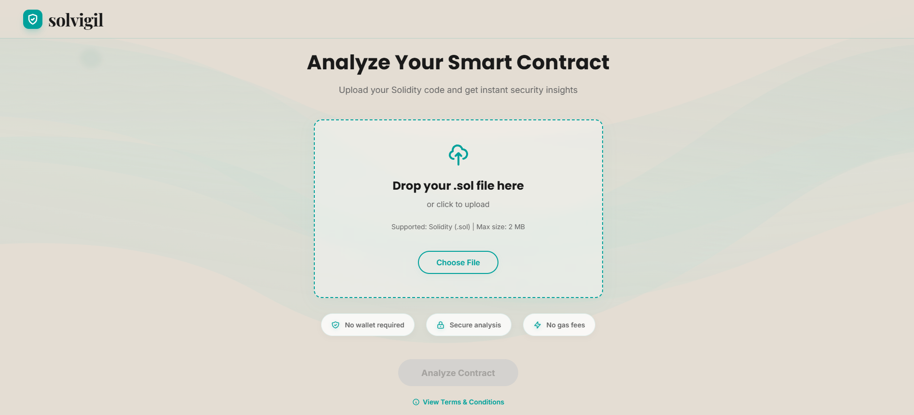
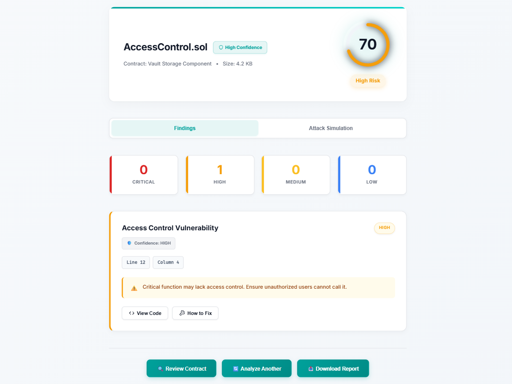
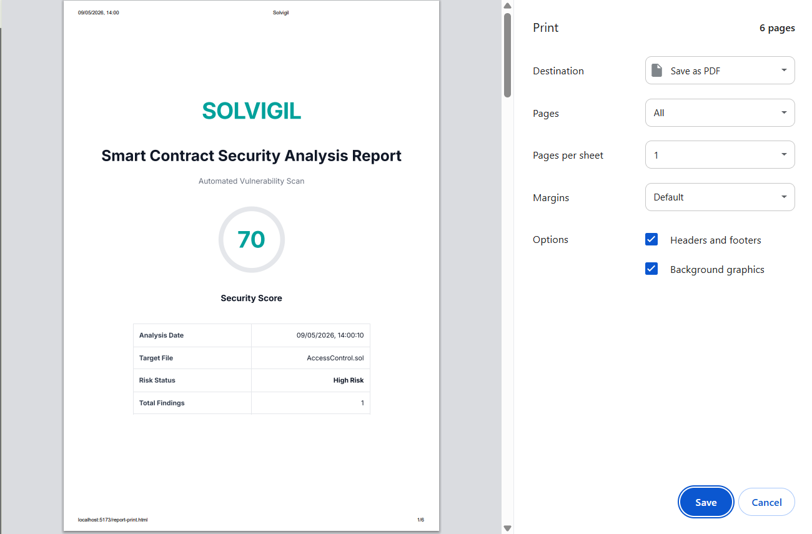

Solvigil Security Scanner
Smart Contract Static Analysis Platform
Solvigil




Project Overview
Solvigil is an automated smart contract static analysis tool engineered to detect vulnerabilities inside Solidity smart contracts. By parsing Solidity code into an Abstract Syntax Tree (AST), the scanner walks tree nodes to identify structural and logical security bugs. This production-grade auditing tool provides visual remediation advice to help developers fix contract flaws prior to mainnet deployment.
Tech Stack
Key Features
- Static AST Parsing: Translates Solidity source code into structured JSON AST nodes for rule evaluation.
- Severity Risk Mapping: Dynamically classifies vulnerabilities based on CVSS scale parameters.
- Interactive UI Dashboard: Fully responsive interface that highlights faulty code blocks.
- Secure Multi-File APIs: High-performance express endpoint with strict size and CORS configuration controls.
Security Auditing Capabilities
- Reentrancy Scans: Discovers variables modified after low-level external transfers.
- Access Control Audits: Highlights critical state modifying functions lacking modifiers.
- Unchecked Calls: Traces low-level return values (e.g. `call`, `send`) without check validations.
- DoS Vectors: Signals loops bounded by dynamic arrays vulnerable to Block Gas limits.
Challenges & Solutions
Challenge: Traversing the entire Abstract Syntax Tree for large contracts was highly resource-intensive and produced high false positives by flagging innocent loops or helper functions.
Solution: Developed pre-traversal filter algorithms that scan imports, check annotations, and isolate suspicious syntax patterns first, eliminating unnecessary node traversals and improving overall scan speeds.
Challenge: Translating nested JSON findings into readable PDF audit reports without triggering memory limit timeouts on serverless Render APIs.
Solution: Designed a stream-based PDF layout engine that processes and builds tables, security severity badges, and code snippets block-by-block, rendering a lightweight and clean downloadable audit log.